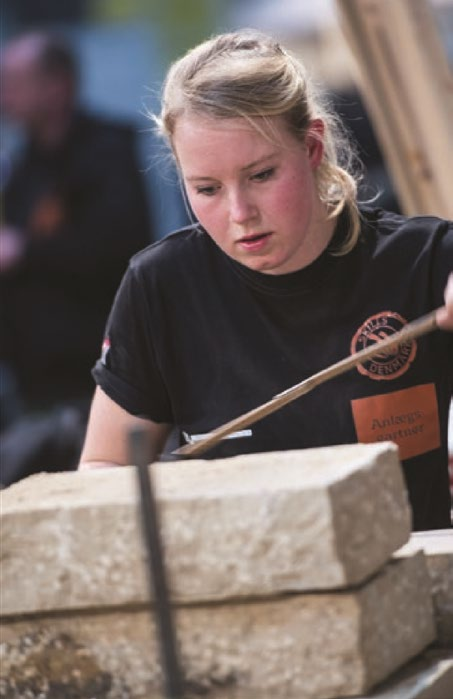
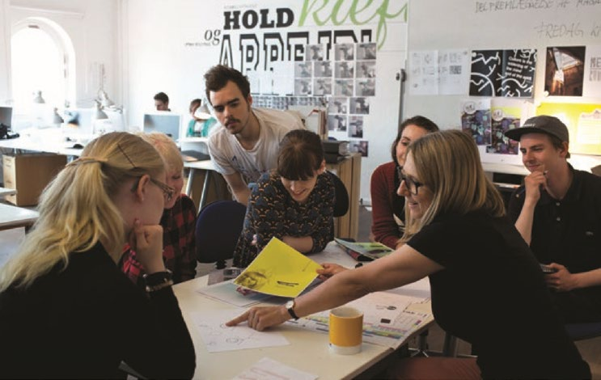
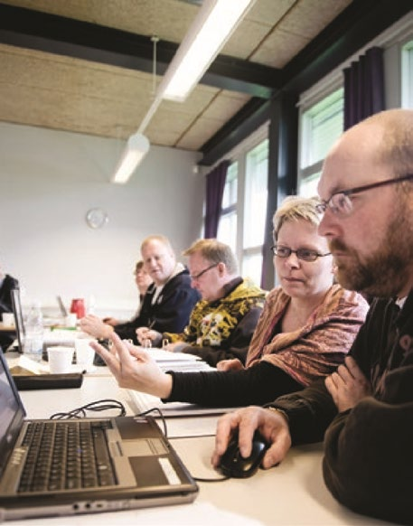

Fakta-ark 2: Uddannelse
Áudio
sidde 11
Fakta-ark 2: Uddannelse
Læremateriale Til Medborgerskabsprøven
sidde 12
Uddannelse er meget vigtig, da de fleste job på det danske arbejdsmarked kræver, at man har en uddannelse. Det danske samfund kaldes ofte et videns samfund. Det betyder, at stadig flere mennesker har et arbejde, hvor viden er den vigtigste ressource*. Derfor spiller uddannelse en helt afgørende* rolle for unge og voksne. Uddannelse er som regel gratis i Danmark.
Læremateriale Til Medborgerskabsprøven Fakta-Ark 2: Uddannelse
Dette fakta-ark handler om: • Ungdomsuddannelser • Videregående uddannelser • Voksen- og efteruddannelse
Ungdomsuddannelser
Efter folkeskolen vælger langt de fleste unge at søge ind på en ungdomsud dannelse. Der er to forskellige former for ungdomsuddannelser: De gymnasiale uddannelser og erhvervsuddannelserne. Desuden er der nogle uddannelser, der kan forberede unge til disse uddannelser, eller hjælpe unge på vej i livet. Det drejer sig fx om FGU (forberedende grunduddannelse) og STU (særligt tilrette lagt ungdomsuddannelse).
FGU er for unge under 25 år, der ikke er i gang med eller har en ungdomsuddan nelse, som ikke har et job, og som har behov for en særlig forberedende indsats for at gennemføre en ungdomsuddannelse eller komme i beskæftigelse. FGU har plads til, at unge er forskellige. Formålet med FGU er at gøre eleverne klar til at tage en ungdomsuddannelse eller et job.
STU er for unge under 25 år med særlige behov, der ikke kan tage en ungdoms uddannelse. Formålet er at unge, som er udviklingshæmmede eller har andre særlige behov, bliver så parate som muligt til voksenlivet og måske også til en videre uddannelse eller et job. STU giver ikke i sig selv adgang til andre uddan nelser.
De Gymnasiale Uddannelser
De gymnasiale uddannelser forbereder især de unge til videregående uddan nelser, og undervisningen foregår normalt på gymnasier og erhvervsskoler. På de offentlige gymnasier er undervisningen gratis. Der er fire forskellige gymnasiale uddannelser:
- Uddannelsen til almen studentereksamen (stx)
- Uddannelsen til merkantil studentereksamen (hhx)
- Uddannelsen til teknisk studentereksamen (htx)
- Uddannelsen til hf-eksamen (hf)

sidde 13
Stx-, hhx- og htx-uddannelserne varer tre år og hf-uddannelsen varer to år. Her kan unge, der har afsluttet grundskolen med 9.-klasseprøven, blive optaget*. Alle fire gymnasiale uddannelser afsluttes med en eksamen, som giver adgang* til en videregående uddannelse.
Læremateriale Til Medborgerskabsprøven Fakta-Ark 2: Uddannelse
På stx arbejdes der i høj grad videre med de fag, som de unge har haft i grund skolen, fx sprog, historie, matematik, samfundsfag, fysik, kemi og biologi. Uddan nelsen afsluttes med en studentereksamen.
På hf har man stort set de samme fag som i det almene gymnasium. Hf-eksamen er særligt rettet mod korte og mellemlange videregående uddannelser på professionshøjskoler og erhvervsakademier. Uddannelsen afsluttes med en hf-eksamen.
På hhx er der undervisning i fag, der har med handel at gøre, fx økonomi, afsæt ning* og international økonomi. Men der er også undervisning i fx sprog, mate matik og samfundsfag. Undervisningen foregår normalt på et handelsgymna sium. Uddannelsen afsluttes med en merkantil studentereksamen.
På htx er der undervisning i naturvidenskabelige og teknologiske fag. Men der er også undervisning i fx sprog og matematik. Undervisningen foregår normalt på et teknisk gymnasium. Uddannelsen afsluttes med en teknisk studenter eksamen.
Erhvervsuddannelserne
Efter folkeskolen kan man også vælge en erhvervsuddannelse. Der er mere end 100 forskellige erhvervs uddannelser, der giver mulighed for job som faglært eller videreuddan nelse. De mange erhvervsuddan nelser henvender sig til alle erhverv i Danmark fx inden for fire hovedom råder:
- Kontor, handel og forretnings service
- Fødevarer, jordbrug og oplevelser
- Teknologi, byggeri og transport
- Sundhed, omsorg og pædagogik
sidde 14
Uddannelserne fører til job som fx industritekniker, mekaniker, VVS’er, elektriker, social- og sundhedsassistent, pædagogisk assistent, kok, smed, butiksassistent, murer, mediegrafiker, frisør, landmand og meget mere.
Læremateriale Til Medborgerskabsprøven Fakta-Ark 2: Uddannelse
En erhvervsuddannelse består af et grundforløb på en erhvervsskole og et hoved forløb. I hovedforløbet kombinerer man skoleundervisning på en erhvervsskole med praktisk oplæring. Oplæringen får man som regel i en virksomhed. Når man har en uddannelsesaftale med en virksomhed, får man løn både i oplæringen og i skoletiden. En erhvervsuddannelse kan tage mellem 1½ og 5½ år, alt efter hvilken uddannelse der er tale om. Hvis eleverne ikke kan finde en læreplads efter grundforløbet, kan de i de fleste tilfælde få oplæringen på et skoleoplæ ringscenter. Så får de ikke løn, men skoleoplæringsydelse.
Erhvervsuddannelserne har tre spor: et for unge (eud), et for voksne over 25 (euv) og som kombination med gymnasial eksamen (eux). Med en eux får du en erhvervsuddannelse med indbyggede gymnasiale fag. Det betyder, at du med en afsluttet eux både får svendebrev med direkte adgang til job (fx som elektriker) og en erhvervsfaglig studentereksamen.
De Videregående Uddannelser
De fleste unge, der har taget en gymnasial uddannelse, fortsætter på en videre gående uddannelse. Det samme gør nogle unge fra erhvervsuddannelserne. De fleste videregående uddannelser er gratis for borgere i Danmark og EU.
De enkelte uddannelser har særlige adgangskrav for at blive optaget. Det kan fx være krav* om, at man har haft bestemte fag på sin gymnasiale uddannelse, eller at man har et bestemt karaktergennemsnit.
De videregående uddannelser kan blandt andet tages på erhvervsakademier, på professionshøjskoler, maritime uddannelsesinstitutioner, videregående kunstneriske uddannelsesinstitutioner og på universiteter.
Erhvervsakademier (Business Academies)
På et erhvervsakademi kan man blandt andet tage en erhvervsakademiuddan nelse, hvor man uddannes til et bestemt job eller til at arbejde i en bestemt branche. Det kan fx være job som laborant, el-installatør eller et arbejde i en bank. Undervisningen er kombineret med praktik. En erhvervsakademiuddan nelse tager typisk omkring to år. Der er syv erhvervsakademier i Danmark.

sidde 15
Professionshøjskoler (University Colleges)
Læremateriale Til Medborgerskabsprøven Fakta-Ark 2: Uddannelse
På professionshøjskoler kan man blandt andet tage en professionsbachelorud dannelse, hvor man uddannes til et bestemt job Det kan fx være som folkesko lelærer, jordemoder, sygeplejerske, socialrådgiver, pædagog, fysioterapeut eller diplomingeniør. Men man kan fx også blive journalist eller komme til at arbejde med kommunikation. En professionsbacheloruddannelse tager normalt tre-fire år. Der Indgår praktik i disse uddannelser. Der er syv professionshøjskoler i Danmark.
Universiteter
På universiteter kan man tage en lang videregående uddannelse, herunder bacheloruddannelser og kandidatuddannelser. Det kan være inden for sund hedsvidenskab (fx medicin), samfundsvidenskab (fx jura eller økonomi), huma nistisk videnskab (fx sprog eller historie), naturvidenskab (fx biologi, fysik eller kemi) eller teknisk videnskab (fx civilingeniør). En bacheloruddannelse tager typisk omkring tre år, og en efterfølgende kandidatuddannelse tager typisk omkring to år. Der er otte universiteter i Danmark.
Økonomisk Støtte I Forbindelse Med Uddannelse
Staten kan give økonomisk støtte, hvis man studerer på en uddannelse. Denne støtte kaldes i daglig tale SU, som er en forkortelse for Statens Uddannelses støtte. Man kan få SU, når man er indskrevet på en uddannelse, som er godkendt til SU, og hvis man opfylder betingelserne for at få SU. For eksempel at man er studieaktiv og ikke tjener for meget ved siden af. Hvis man ikke er dansk stats borger, kan man søge Uddannelses- og Forskningsstyrelsen om at få samme økonomiske støtte som danske statsborgere.

sidde 16
Voksen- Og Efteruddannelse
Læremateriale Til Medborgerskabsprøven Fakta-Ark 2: Uddannelse
Der er en lang tradition for efteruddannelse i Danmark. Man taler ofte om, at livslang læring (læring gennem hele livet) er vigtig. Personer, der allerede har en uddannelse og erhvervserfaring, har mange muligheder for at videreuddanne sig. De kan fx tage en diplomuddannelse, som er en uddannelse på deltid*, hvor det faglige niveau svarer til en bacheloruddannelse. Uddannelsen tager typisk to til tre år på deltid, og man betaler for at gå på uddannelsen. Mange skoler, der tilbyder videregående uddannelser, har kurser, hvor det er muligt at læse ét fag ad gangen.
Voksne kan også tage korte AMU-kurser. AMU står for arbejdsmarkedsuddan nelser og er korterevarende kursusforløb primært rettet mod faglærte og ufag lærte. Der er mange forskellige arbejdsmarkedsuddannelser inden for handel, administration og ledelse, sundhed, bygge/ anlæg, jordbrug, køkken/restaurant, metalindustri, transport m.m.
Hvis en voksen fx har problemer med at stave, læse eller regne, kan han eller hun tage FVU-kurser på VUC (voksenuddannelsescentre). Man skal normalt være fyldt 25 år for at kunne blive optaget på FVU.
Hvis en voksen er ordblind*, kan personen tage ordblindeundervisning (OBU-kurser) på VUC. Formålet med OBU er at give vedkommende bedre muligheder for at klare sig i situa tioner, hvor man skal læse eller skrive. Man skal normalt være fyldt 25 år for at kunne blive optaget på OBU.
På VUC kan voksne også tage avukurser (almen voksenuddannelse). Formålet er at give voksne bedre muligheder for videre uddannelse og for aktiv medvirken i et demokratisk samfund. Fagene på avu er enkeltfag på grundskoleniveau, fx engelsk, dansk, tysk eller matematik. Man kan tage et eller flere fag af gangen. Der er forskellige niveauer, og det højeste niveau (D) giver god faglig sammenhæng til den gymnasiale hf-eksamen. Man skal som hovedregel være fyldt 25 år for at blive optaget på avu.
Fonte: Læremateriale til Medborgerskabsprøven, SIRI.